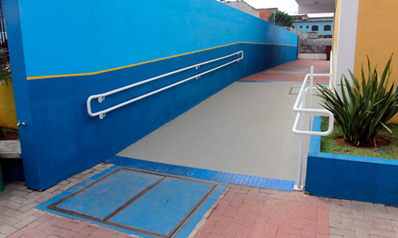
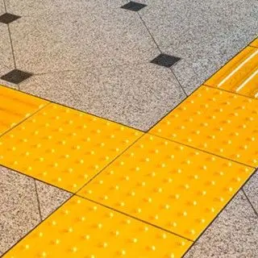
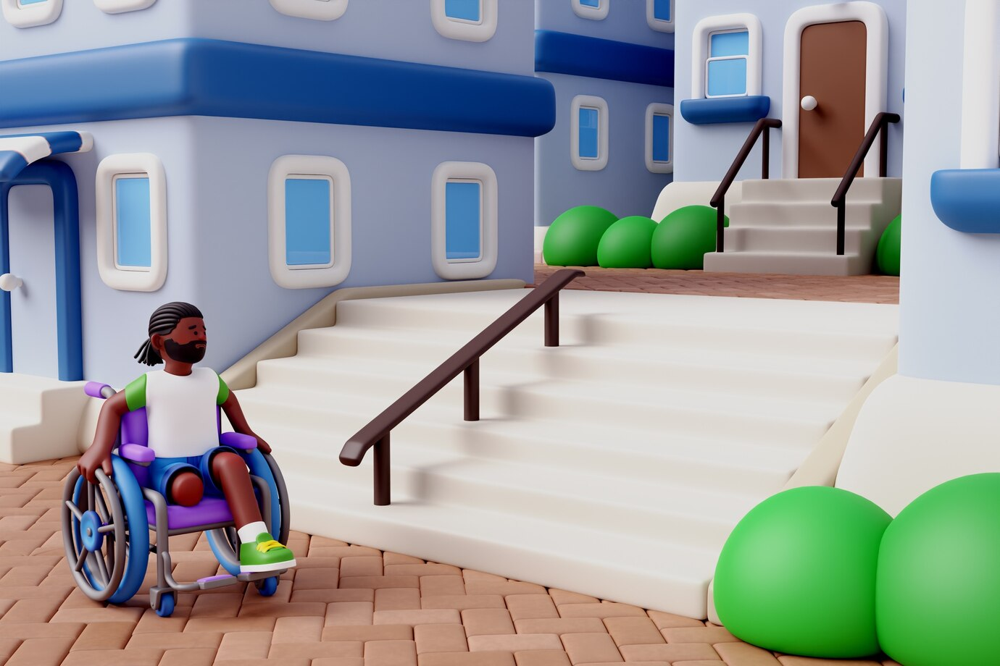
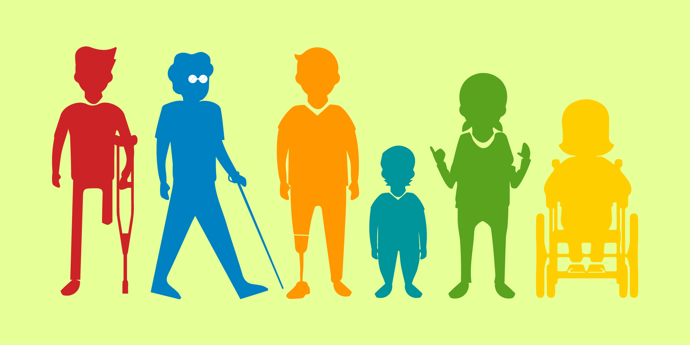

Melhoria da Acessibilidade e Inclusão
Projeto para tornar a escola mais acessível e inclusiva para todos os estudantes
Sobre o Projeto
O presente projeto visa realizar uma análise detalhada da infraestrutura e dos recursos disponíveis na escola, com o intuito de identificar e implementar melhorias que assegurem a plena acessibilidade e inclusão de estudantes com deficiência. Este esforço é fundamental para criar um ambiente educacional que não apenas respeite, mas também promova a diversidade, permitindo que todos os alunos tenham igualdade de oportunidades para aprender e se desenvolver.
Para alcançar esse objetivo, propomos uma abordagem integrada que abrange a reavaliação de nossas instalações físicas, bem como a adequação de materiais didáticos e a capacitação de nossos profissionais. Com a implementação de rampas, elevadores e sinalizações adaptadas, além da adoção de recursos pedagógicos acessíveis, pretendemos garantir que cada estudante, independentemente de suas necessidades específicas, possa participar ativamente da vida escolar.
 O Problema
Atualmente, a escola enfrenta desafios significativos em relação à acessibilidade para estudantes com deficiência. A ausência de rampas adequadas e elevadores compromete a mobilidade de alunos com deficiência física, enquanto a falta de sinalização apropriada torna difícil a navegação para aqueles com deficiência visual. Essas lacunas estruturais limitam a capacidade de todos os alunos de participar plenamente das atividades escolares.
Além disso, a carência de recursos didáticos adaptados, como materiais em braile e vídeos com legendas e tradução em Libras, impede que estudantes com diferentes necessidades de aprendizado tenham acesso igualitário ao conteúdo curricular. Essa situação destaca a necessidade urgente de ações que promovam a inclusão e a equidade no ambiente escolar.
 Soluções Propostas
- Construção de Rampas e Instalação de Elevadores: Elaborar um plano para a construção de rampas e instalação de elevadores em áreas da escola que não são acessíveis, garantindo o acesso a todos os estudantes.
Realizar um levantamento das áreas que necessitam de melhorias e priorizar locais com maior demanda, como entradas principais e andares superiores.
Consultar profissionais especializados para desenvolver um projeto que siga as normas de acessibilidade e inclua materiais de qualidade.
Definir um cronograma de execução das obras e comunicar a toda a comunidade escolar para minimizar impactos nas atividades. - Melhoria na Sinalização: Implementar um sistema de sinalização claro e acessível, incluindo placas em braile e alta relevância em todas as áreas da escola.
Desenvolver um layout padronizado para as sinalizações incluindo textos, símbolos e núcleos contrastantes, facilitando a leitura por todos os alunos.
Colocar placas informativas em locais estratégicos, como entradas, corredores, banheiros e salas de aula, garantindo que sejam visíveis e em conformidade com as normas de acessibilidade.
Criar um guia em formato digital acessível que contenha informações sobre a localização de serviços e recursos disponíveis na escola. - Adaptação de Materiais Didáticos: Fornecedor de materiais didáticos adaptados para atender às necessidades de estudantes com deficiência visual ou auditiva.
Trabalhar em colaboração com editoras para produzir livros em braile e audiolivros, além de criar recursos visuais e audiovisuais que complementem o aprendizado.
Introduzir o uso de tecnologia assistiva, como softwares de leitura de tela e legendas, para facilitar a inclusão de todos os estudantes nas atividades pedagógicas.
Promover a capacitação dos educadores sobre como utilizar esses materiais na sala de aula, garantindo que todos os alunos tenham acesso ao conteúdo curricular. - Capacitação dos Professores: Proporcionar treinamentos para que os professores adquiram competências para adaptar suas aulas e atender a diversidade de alunos.
Organizar workshops e palestras sobre metodologias inclusivas, técnicas de ensino diferenciadas e uso de tecnologias assistivas.
Criar um espaço de troca de experiências, onde os educadores possam compartilhar práticas bem sucedidas e discutir desafios enfrentados no dia a dia.
Estabelecer um programa de acompanhamento para professores que incluam implementação de novas estratégias, com feedback regular e suporte contínuo. - Criação de um Comitê de Inclusão: Formar um comitê para monitorar a implementação das melhorias e promover uma cultura de inclusão na escola.
Compõe o comitê com representantes de diferentes segmentos da escola, incluindo alunos, pais, professores e especialistas em educação inclusiva.
Realizar reuniões periódicas para avaliar o progresso das ações de rupturas, discutir novas necessidades e coletar feedback da comunidade escolar.
Desenvolver um relatório anual que documente as ações realizadas, os resultados obtidos e as propostas para o próximo ano, promovendo transparência e engajamento da comunidade.
Plano de Ação
O plano inclui as seguintes etapas:
- Avaliação das Necessidades e Identificação de Áreas Críticas:
Nesta fase inicial, será realizada uma análise abrangente para identificar as necessidades específicas dos estudantes com deficiência. Isso incluirá entrevistas com alunos, pais e professores, além de visitas às instalações para avaliar a acessibilidade física, recursos didáticos e a eficácia da sinalização atual. O objetivo é mapear as áreas que precisam de atenção urgente e compreender as diferentes barreiras enfrentadas por cada grupo.
- Implementação das Soluções Propostas:
Com base nos dados coletados na avaliação, serão priorizadas as soluções a serem implementadas. Isso pode incluir a construção de rampas, a instalação de elevadores, a adaptação de salas de aula e a criação de materiais didáticos acessíveis. As soluções serão implementadas em etapas, garantindo que as intervenções mais críticas sejam realizadas primeiro, de acordo com as necessidades identificadas.
- Capacitação dos Professores e Funcionários:
A formação dos educadores é essencial para garantir que todos estejam preparados para atender às diversas necessidades dos alunos. Serão oferecidos workshops e treinamentos sobre práticas inclusivas, abordagens pedagógicas diferenciadas e técnicas de comunicação com estudantes com deficiência. Além disso, os funcionários terão acesso a informações sobre os recursos disponíveis e como utilizá-los efetivamente.
- Formação do Comitê de Inclusão:
Será criado um comitê de inclusão composto por representantes de alunos, pais, professores e especialistas em acessibilidade. Este comitê terá a responsabilidade de monitorar continuamente as melhorias implementadas, garantindo que as necessidades dos estudantes sejam atendidas de maneira eficaz. Além disso, será um canal de comunicação para feedback e sugestões, promovendo um ambiente colaborativo.
- Feedback e Ajustes Contínuos:
Após a implementação das melhorias, será fundamental coletar feedback regularmente de todos os envolvidos, incluindo estudantes e suas famílias. Com base nas sugestões e experiências compartilhadas, ajustes poderão ser feitos nas práticas e soluções implementadas, assegurando que o ambiente escolar permaneça inclusivo e adaptado às necessidades de todos os alunos. Esta etapa envolverá também avaliações periódicas do impacto das mudanças e a adaptação contínua das estratégias de inclusão.
Resultados Esperados
A implementação dessas melhorias é um passo fundamental para transformar nossa escola em um ambiente verdadeiramente inclusivo, onde todos os estudantes, independentemente de suas habilidades ou limitações, possam acessar as mesmas oportunidades de aprendizado. Ao garantir que todos tenham acesso a rampas adequadas, elevadores, sinalização inclusiva e materiais didáticos adaptados, estaremos promovendo não apenas a igualdade, mas também um respeito profundo entre os alunos. Essa abordagem não só enriquece a experiência de aprendizado de cada estudante, mas também prepara todos para um futuro mais justo e harmonioso, onde a diversidade é valorizada e celebrada. Ao cultivar um ambiente de inclusão, contribuímos para o desenvolvimento de cidadãos mais conscientes e solidários, prontos para enfrentar os desafios do mundo com empatia e respeito.
Contato
Osaco, Brasil
Email: gabrielle96605836@gmail.com
Entre em contato para saber mais sobre o projeto ou para contribuir com ideias e sugestões.